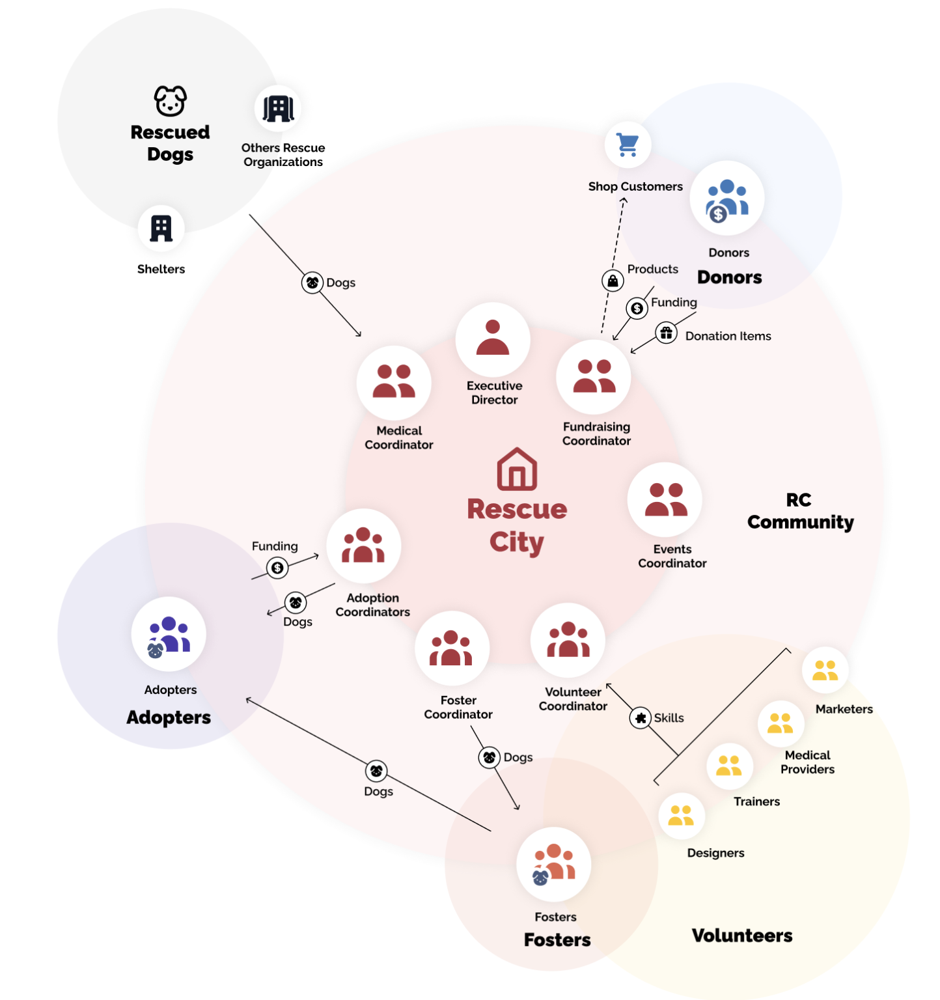
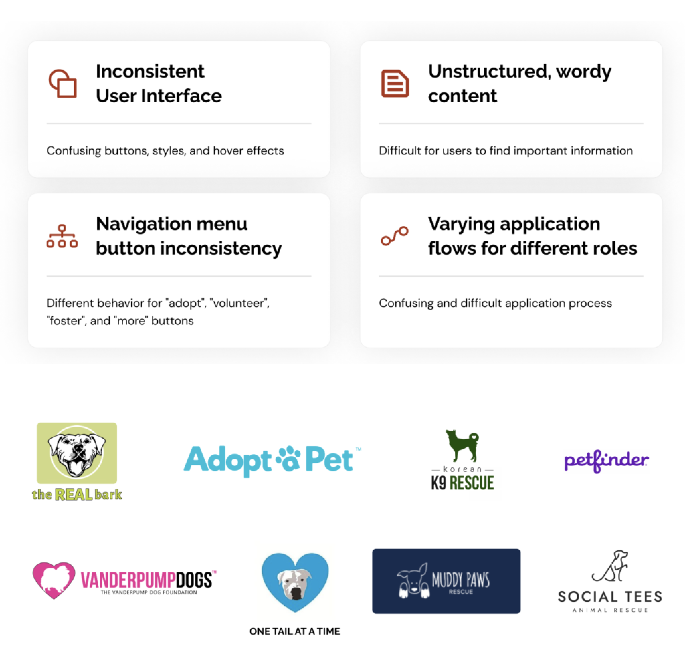
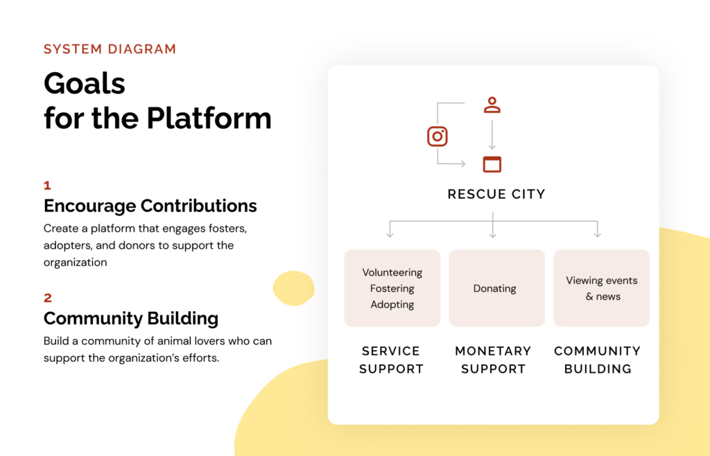
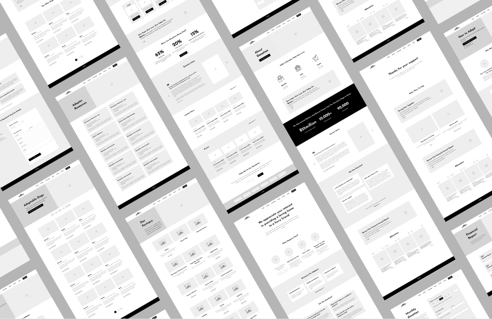
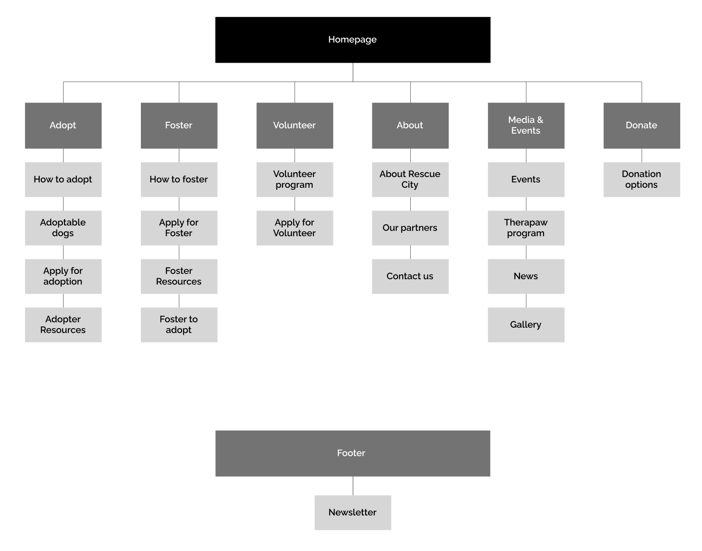
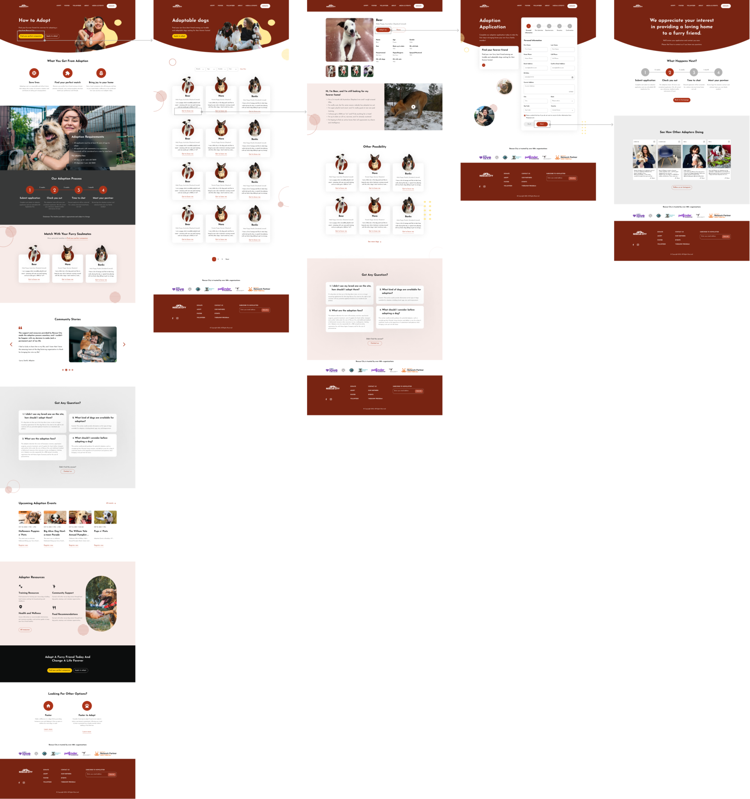
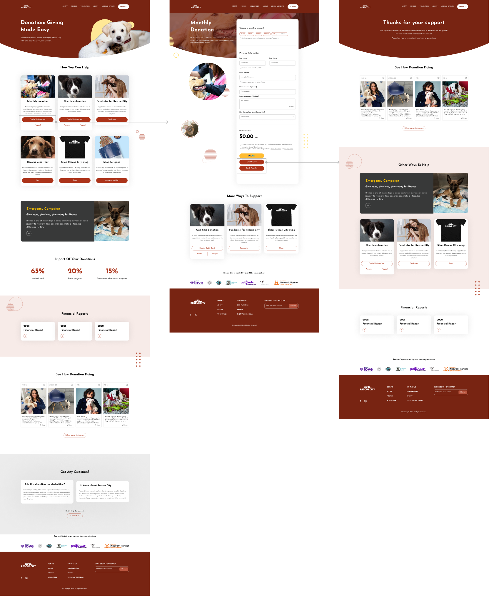

Carolyn Yu
🛠 Method & Tools
- Method: Competitive Analysis, Persona, User Journey, User Testing.
- Tools: Figma
💪🏻 Collaborators
Shan Chang, Carolyn Yu, Katie Im, Nahee Kim
🗓 Project Duration
Feb – May 2023
About Rescue City
The Rescue City is a nonprofit, foster-based dog rescue organization that aims to rescue and rehome dogs in safe and loving homes. The organization relies on the community, including adopters, volunteers, donors, and partners, to carry out its mission.

Project Goals
Our team of four UX designers partnered with Rescue City in order to redesign their website. After meeting with the Vice President of the organization we were able to identify our three main goals:
- Grow the Rescue City (RC) community: adopters, fosters, and donors
- Increase awareness about events and programs
- Optimize the site for both desktop and mobile
Research
To identify the existing problems with the current website, we conducted a website audit, developed an ecosystem map, conducted competitive research, reviewed literature, and conducted interviews and user testing. Here are the key findings from each methodology:
Ecosystem Map
We developed an ecosystem map to better understand the various roles that contribute to and empower Rescue City as an organization and three different roles: adopters, donors, and volunteers.


Website Audit
A website audit was conducted in order to better understand the current strengths and weaknesses of the site. We identified four main areas of concern:
- Inconsistent User Interface, with confusing buttons, styles, and hover effects
- Unstructured and wordy content, making it difficult for users to find important information
- Navigation menu button inconsistency, which led to confusion
- Varying application flows for different roles, causing further confusion for users
Competitive Research
These were the biggest takeaways overall:
We evaluated eight foster/rescue organizations focusing on five factors: Homepage, Navigation, Content, Donation, and Adoption and Foster Process. These organizations were chosen based on their local presence in New York, popularity within our personal network, and recommendations from stakeholders.
- HomePage: Having testimonials and specific dogs available to foster/adopt can personalize the user experience.
- Navigation Bar: Emphasis on Donate CTA to ensure all the necessary headers are visible.
- Content: Every photo has a purpose and the text is concise and spaced appropriately.
- Adopt & Foster: Emphasize storytelling of finding the best match for dogs and their fosters/adopters. Personify the user journey so it is more of a relationship rather than a transaction.
- Donation Process: Providing money usage and donation history can increase transparency and trust.
This competitive analysis helped us understand the Information Architecture, Content Structure, and key user flows to inform our redesign process.
Literature Review
We learned from current literature how companies can build trust, raise adoption rates, and enhance donations for rescue organizations, highlighting the importance of design quality, transparent information, and fostering connections between potential adopters and animals.
Interviews and Usability Testing
During our user testing process, we conducted interviews and gathered feedback from six participants, ensuring an equal distribution between desktop and mobile users. The selected participants had prior experience in fostering, adopting, or donating to rescue organizations. The testing comprised three main components:
- Background Questions: We began by asking participants relevant background questions to gain insights into their experiences and perspectives.
- Task Execution on the Current Rescue City Site: Participants were given specific tasks to perform on the existing Rescue City website. This allowed us to observe how well the site met their needs and identify any pain points or areas for improvement.
- Follow-up Questions and Feedback: We concluded the testing session with follow-up questions that allowed participants to share their overall experience and provide additional insights into the website’s usability and functionality.
By incorporating these three elements, we obtained valuable user insights that will inform the optimization and enhancement of the Rescue City site. Here are the main takeaways from our interviews:
- Reasons to Help: Participants value animal companionship or work in the non-profit space
- Communication Preferences: Email preferred for updates and staying connected
- Transparency and Context: Desire for more information and photos to understand the organization and donation usage
- Information Needs: Fosters and adopters seek dog’s personality, preferences, traumas, and needs to connect before committing
- Post-Adoption/Fostering Support: Need for additional check-ins after fostering or adopting
Design Principles
After our research phase, we were able to identify insights that would guide our design principles.
- Help potential fosters and adopters easily access and understand key information.
- Create a community to encourage current fosters, adopters, and donors to connect.
- Prioritize matchmaking between dogs and people to enhance their partnership and increase the adoption rate.
- To build trust with potential donors and increase donations.
Ideation
In order to uphold design principles, tackle problems, and accomplish research objectives, we embarked on an information architecture (IA) restructuring and idea recreation. Our design solution centered around two primary goals: creating an interactive platform that actively engages fosters, adopters, and donors in supporting the organization, and building a community of passionate animal lovers who can contribute to and sustain the organization’s efforts.
To achieve this, we meticulously re-imagined each element on separate pages and conducted in-depth discussions with the team to refine the wireframes. As a result, we successfully produced mid-fidelity wireframes, which are ready for evaluation in the upcoming phase.

This system diagram illustrates the key components of the redesign, and a mid-fi wireframe, which provided a visual representation of our proposed solutions.

Evaluation and Iterations
In the evaluation phase, we aimed to assess the effectiveness of our proposed design. To ensure the organization and structure of the navigation system, we conducted tree testing to refine the information architecture (IA) of the website. Additionally, we performed prototype usability testing to gather insights and validate the redesigned user interface.
Tree Testing
The primary objectives of tree testing were to identify any navigation issues, gauge the clarity of labels, and assess the intuitiveness of the proposed IA structure. With the help of 20 participants, we presented them with a simplified textual representation of the website’s main navigation structure and asked them to complete 5 specific tasks, and the post-task questions. Here are the key findings from our testing result:
- The behavior that users seek to learn more information about the organization may vary significantly.
- Users may try to visit the adopt menu to find additional related resources and information.
- The donation options are intuitive and easily accessible for users.
- Users struggled to find the newsletter sign-up option. To address this, the newsletter should be made more prominent and easily accessible.
- Users appear to have no difficulty in locating the “Volunteer” section and discovering volunteer opportunities through the website’s navigation.
With these findings, we restructured the information architecture as shown below:

Usability Testing
To evaluate the redesigned UI and gather insights about the overall user experience, we conducted mid-fidelity prototype usability testing with 6 participants. This testing phase involved observing participants and collecting their feedback as they interacted with a functional prototype of the website. In this phase, we focus on four main tasks related to fostering, adoption, donation, and staying informed. The main findings of the prototype testing are:
- Expect the Donation CTA button on the navigation bar to be clickable rather than a dropdown interaction.
- Simplify the entrance of the Foster-to-Adopt options on the Navigation bar and avoid showing more than one time in the same navigation structure.
- To create a stronger bond with a potential adopter or foster, try personalizing the dog profile page, such as adding a video or using a first-person perspective to describe the dog, or using a conversational tone of the content.
- Donation amount order options can start small to avoid stress.
By incorporating the feedback and insights gained from these evaluation methods, we restructure the IA of the Rescue City website and tweak the label tone, design style, and UI elements for the next iteration of our web redesign.
Hi-fidelity prototype
MVP KEY FLOW
Adoption Flow
To increase the number of adoptions and fosters, we have implemented key improvements to our process. Firstly, we have focused on providing clearer explanations of the adoption and foster timeline, ensuring potential adopters and fosters have a better understanding of what to expect.
In addition, we have revamped the way we present each dog’s personality. By shifting from a third-person perspective to a first-person perspective, we create a more personal and engaging connection between the reader and the dog. To further enhance this experience, we have incorporated videos and pictures that effectively showcase the unique qualities and charm of each dog. These visual elements serve to capture attention and break through the screen, leaving a lasting impression on those considering adoption or fostering.
Since the adoption and foster processes share a similar flow, the changes made to improve the adoption process are also applicable to fostering. By streamlining the flow and incorporating engaging elements, we aim to increase both adoptions and fosters.

Donation Flow
Based on our research, our main objective is to establish trust on the website in order to encourage users to increase their donations. In addition to traditional donation options, we want users to be aware of the various alternative ways they can support our community.
To achieve this, we have undertaken a reorganization of the information architecture, ensuring that users can easily navigate and discover the different avenues available for supporting our cause. We have also placed a strong emphasis on showcasing the impact of donations by providing access to data and financial reports directly on the donation page. This transparency allows users to see how their contributions make a tangible difference.
Furthermore, we have harnessed the power of Instagram by integrating relevant posts on our website. This strategic utilization of Instagram’s vast follower base helps bridge the gap between the two platforms, further enhancing our credibility and reach. With a significant number of followers already on Instagram, we can leverage this existing audience to generate more awareness and engagement.
